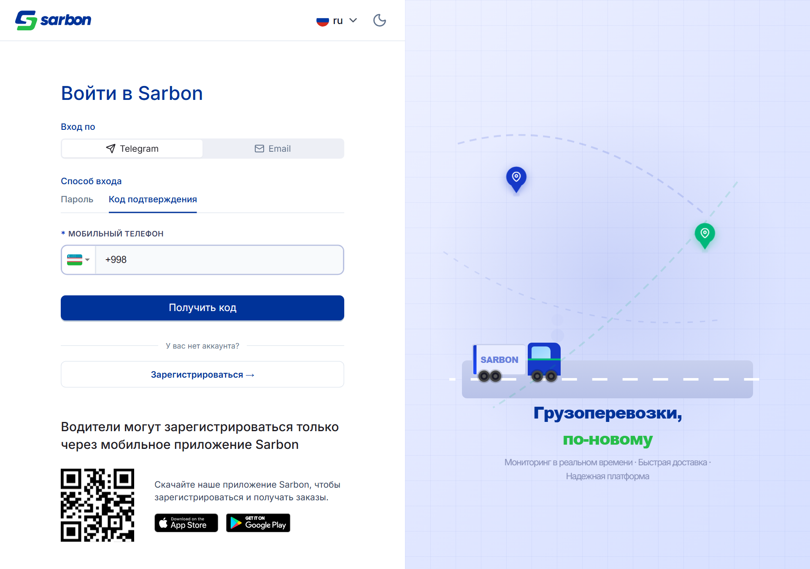
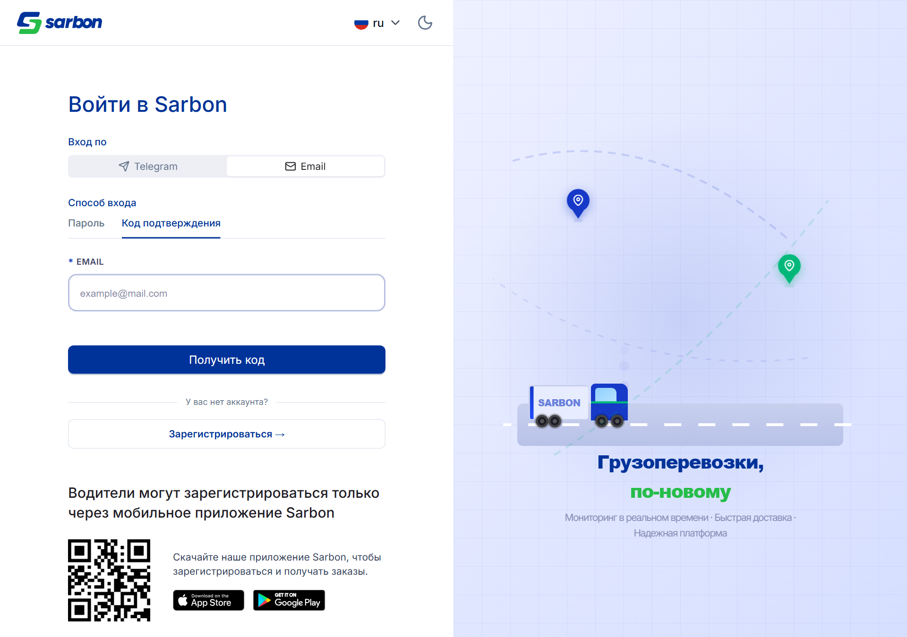
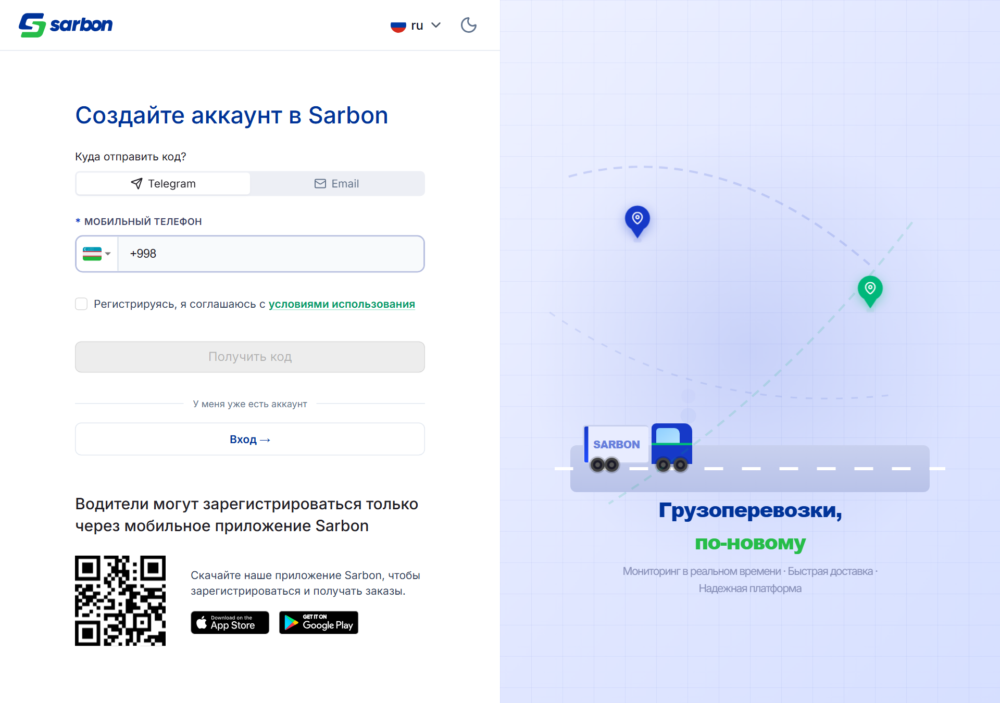
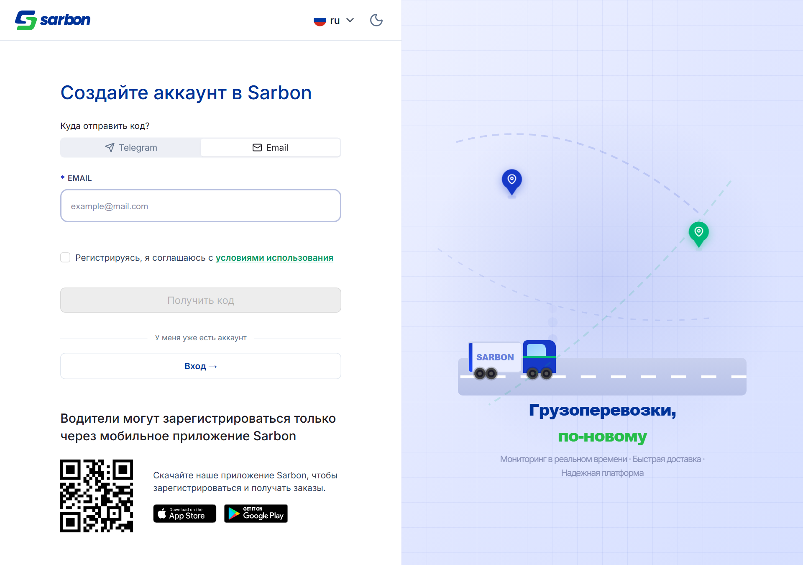
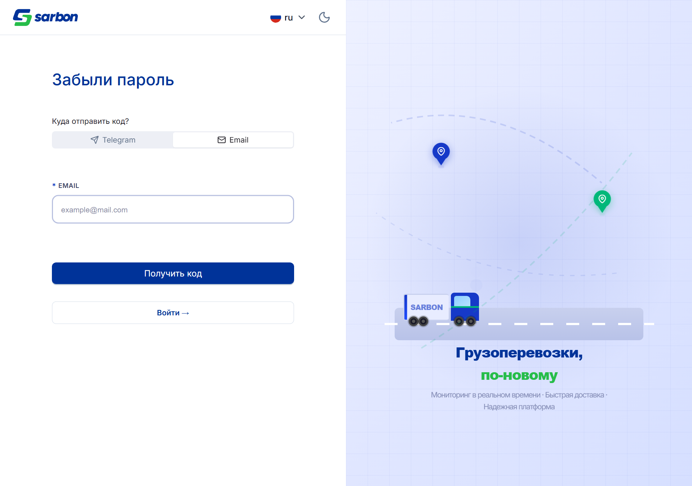
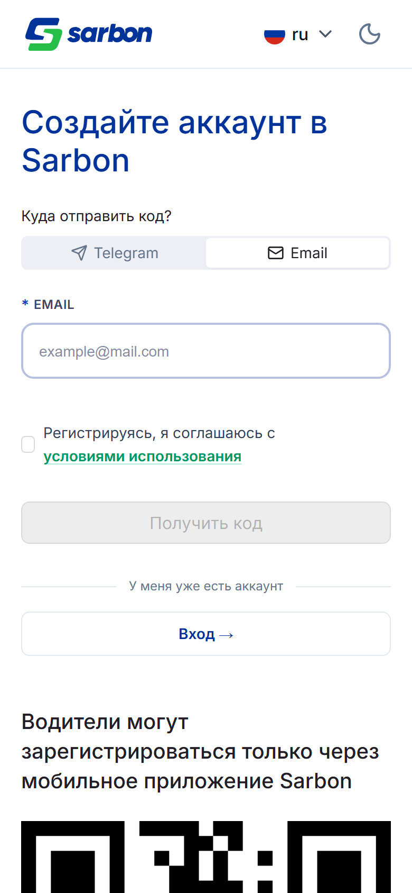
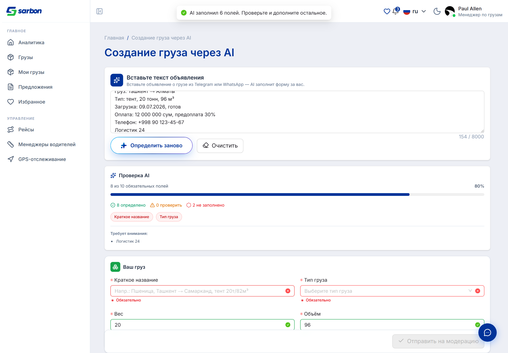
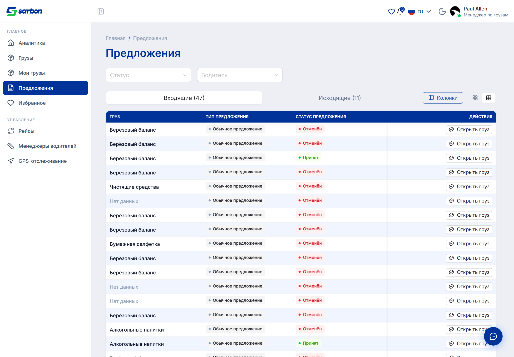

07.07.2026 — насыщенный день с новой крупной фичей и двумя переработками. AI-создание груза (/cargo-ai-create): вставка сырого фрахтового объявления (uz/ru вперемешку, эмодзи, сокращения) → DeepSeek (deepseek-chat) парсит → форма автозаполняется; совпавшие поля зелёные, низкоуверенные жёлтые, пустые обязательные красные; ревёрт к AI, повторное распознавание, черновик в localStorage (24ч), предупреждение о дубликате. Ключ держится за dev-прокси (вне бандла), вывод модели zod-валидируется как недоверенный. Авторизация: общий переключатель идентификатора (Telegram / Email) над тумблером способа (пароль / код), Email привязан к методу «код» — исправлен баг «email + пароль» (бэкенд принимает пароль только по телефону), плюс косметика угла флаг-кнопки в телефоне. Чат-рекордер: переписан под Telegram — один тумблер голос ⇄ видеокружок, запись по удержанию, свайп-вверх для блокировки, свайп-влево — отмена; плавные rAF-таймеры; харднинг флипа камеры / обрезки / «не пишет» на телефонах. Админ: паспортная (identity) модерация вернулась отдельной вкладкой + ортогональный фасет типа модерации в логе; попутно устранён баг дублирования одного водителя на сотни строк (пагинация KYC-очереди). Локализация: тип оффера SIMPLE получил ключи во всех 15 локалях (был английский «Simple»).
| Область | Что было / причина | Что сделано | Файлы |
|---|---|---|---|
| Груз — новая страница «AI-создание груза» feature закоммичено |
Создание груза шло только через 4-шаговый мастер вручную; объявления приходят диспетчерам текстом в мессенджерах. | Отдельная страница /cargo-ai-create: вставка текста → DeepSeek парсит → автозаполнение формы; зелёный/жёлтый/красный по уверенности, ревёрт к AI, повторное распознавание, черновик в localStorage (24ч), предупреждение о дубликате; телефоны/цены редактируются в comment; вывод модели zod-валидируется; ключ за dev-прокси. Переиспользует шаги мастера через null-safe useAiFieldStatus. | cargo-ai-create/*, cargo-create/{context,hooks,utils}/*, api/ai/*, 5 тест-файлов, vite.config.ts (прокси), локали ×15 (+39 ключей) |
| Авторизация — «email + пароль» и переработка идентификатора bug закоммичено |
После перехода на общий переключатель идентификатора выбор Email + Пароль слал {email,password} без телефона → бэкенд «Invalid request body» (пароль принимается только по телефону). | Email привязан к методу «код»: identity = method==='password' ? 'phone' : selected (синхронно, без фликера), email-опция disabled на пароле; onError берёт идентификатор из variables.data (нет гонки при переключении в полёте). | LoginPage.tsx, Auth{Identity,OtpChannel,OtpIdentity}*, authEmail/authLoginIdentity/authOtpChannel.ts (+тесты) |
| Авторизация — угол флаг-кнопки в телефоне bug закоммичено |
Квадратный нижний-левый угол кнопки выбора страны выступал за скруглённую 2px-рамку контейнера — рамка «резала» фон кнопки. | В index.css: убран min-height:48px !important (кнопка = высоте контента) + overflow:hidden (клипит только флаг/стрелку; дропдаун — сиблинг, не режется). Одна общая CSS-правка — фикс для всех PhoneInput. | src/index.css (~L1267) |
| Чат — рекордер переписан под Telegram (голос ⇄ видеокружок) redesign закоммичено |
Две отдельные кнопки, голос = клик-старт инлайн-бар, видео = полноэкранная модалка; не было единой модели и жеста удержания. | Один тумблер голос⇄видео + единая нижняя панель записи (таймер / отмена / держимая кнопка + плавающие блок/пауза / отправка) и плавающее круг-превью; useHoldToRecordGesture (document-level, свайп-вверх — блок, влево — отмена); rAF-таймеры (плавные); харднинг флипа камеры (canvas-preview), обрезки (timeslice 1с), «не пишет» (onerror финализирует). | useVoiceRecorder.ts, useVideoNoteRecorder.ts, useHoldToRecordGesture.ts (new), ChatComposerPanel/ChatVideoNoteCirclePreview/ChatThreadPanel/ChatPage.tsx, локали ×15 |
| Админ — паспортная модерация отдельной вкладкой + фасет типа + фикс дубля feature bug закоммичено |
Вкладка модерации имела только груз/водители/менеджеры (все — допуск); паспортная (identity/KYC) модерация была потеряна. Один водитель рендерился сотнями строк. | Отдельная вкладка «Passport moderation» (Водители — реальные /kyc/*; Менеджеры — best-effort PATCH /dispatchers/:id) + ортогональный фасет «тип модерации» в логе (moderationLogType). Фикс дубля: KYC-очередь читает limit/offset → передан paging:'offset' (было page → бесконечный первый список). | PassportModerationPanel.tsx (new), passportModeration.ts (new), AdminModerationPage.tsx, moderationLogUtils.ts, AdminModerationLogPage.tsx, локали ×15 (+тесты) |
| Офферы — тип оффера «Simple» по-английски на всех языках bug раб. дерево |
Тег типа оффера показывал «Simple» во всех языках. offerTypeLabel резолвит offerType.${KEY}, но группа offerType отсутствовала во всех 15 локалях → падение на англ. defaultValue «Simple». | Добавлена группа offerType (SIMPLE — локализованное «обычное предложение», COUNTER — зеркалит offersPanel.counterOffer) во все 15 локалей. Кода не трогали — центральный хелпер уже ищет ключ. Админ-страница офферов не затронута (свой namespace). | public/locales/*.json ×15 (+offerType, 4 строки) |
// src/pages/auth/login/LoginPage.tsx — идентификатор без фликера и гонок - // раньше: общий тумблер мог оставить Email выбранным на методе «пароль» → {email,password} → 400 + const identity = loginMethod === 'password' ? 'phone' : selectedIdentity // синхронно + // Segmented email-опция disabled при loginMethod==='password'; onSubmit шлёт computed identity + // onError-хендлеры читают variables.data (тело запроса), а не live-стейт формы — нет гонки
Работа собрана в 4 коммита ветки staging плюс правки в рабочем дереве. Технические записи — в bug.md (корень, записи 07.07 с 10:13 до 16:55).
Раздел авторизации — реальные живые скриншоты (Playwright/Chromium против dev-сервера, ru-интерфейс): страницы логина/регистрации/сброса публичные, снимаются без логина. AI-создание груза и фикс оффера — пиксельные репродукции из фактических классов/цветов кода (ai-field-{success,warning,error} = #16a34a / #f59e0b / #ef4444; AntD-теги офферов), т.к. их живые страницы за диспетчерским логином. Чат-рекордер и паспортная модерация гейтятся камерой/админ-логином — для них готовы capture-*.mjs на staging.







autofilled form with confidence borders" loading="lazy" />
| Артефакт | Путь |
|---|---|
| Журнал исправлений (записи 07.07) | bug.md (10:13 · 11:00 · 12:05 · 15:20 · 16:05 · 16:55) |
| Краткая сводка для PM (Excel) | daily-report/07.07.26/report-07.07.26.xlsx |
| AI-создание груза: страница + парсер + прокси | src/pages/cargos/cargo-ai-create/* · src/api/ai/* · vite.config.ts |
| Авторизация: идентификатор + email/пароль + флаг | src/pages/auth/login/LoginPage.tsx · src/pages/auth/components/* · src/index.css |
| Чат-рекордер: голос/видеокружок + жест | src/hooks/use{Voice,VideoNote}Recorder.ts · src/pages/chat/hooks/useHoldToRecordGesture.ts |
| Паспортная модерация + фасет лога | src/pages/admin/moderation/components/PassportModerationPanel.tsx · moderation-log/moderationLogUtils.ts |
| Локализация типа оффера | public/locales/*.json (offerType) · src/pages/offers/utils/offersPageHelpers.ts |
| Скриншоты (живые, авторизованные) + capture-скрипты | daily-report/07.07.26/img/ · capture-auth.mjs · capture-authed-live.cjs · recapture-offers.cjs |
| Отчёт предыдущего рабочего дня | daily-report/06.07.26/index.html |